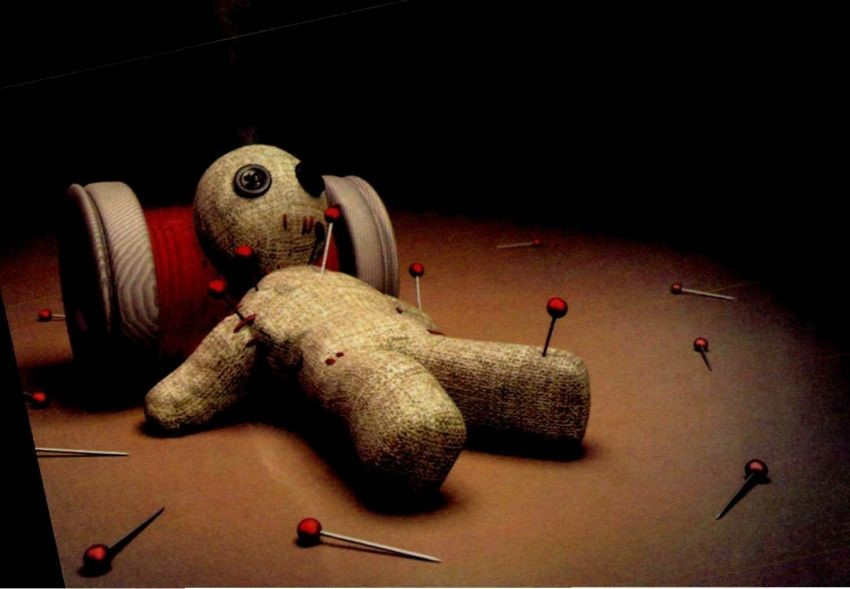

Hati-Hati! 10 Ucapan Sederhana yang Kita Pakai Sehari-Hari Ini, Sebenarnya Rasis Berat
faishal 11-03-2017Kamu pasti sudah nggak asing lagi dengan isu yang satu ini. Sedikit banyak, kamu juga pasti pernah mendengar sejarah tentang penindasan kaum imigran kulit hitam oleh kulit putih di Amerika. Kamu juga pasti pernah membaca tentang Apartheid, sistem yang baru dihapuskan dari pemerintahan Afrika Selatan di tahun 1990.
Tapi tahu nggak sih kalo sebenarnya istilah “rasis” itu bukan hanya dipakai untuk menjelaskan diskriminasi yang dilakukan kaum kulit putih terhadap kulit hitam? Menurut Oxford English Dictionary, definisi rasisme merujuk pada pemahaman yang menganggap bahwa ras atau suku tertentu lebih superior atas ras atau suku yang lainnya. Dengan kata lain, semua tindakan atau pemikiran yang sifatnya melecehkan ras, etnis, atau suku lain bisa digolongkan sebagai tindakan rasis.
Nah, kalo udah gini kamu yakin nggak pernah melakukan rasis secara nggak sadar dalam kehidupanmu sehari-hari? Yuk coba simak artikel ini dulu…
- Saat Sarapan: “Sarapan Roti Dong Mah, Biar Keren Kayak Bule.”
- “Mama Pelit Ih, Kaya Orang Cina!”
- “Pantes Aja Lo Lelet. Orang Jawa, Sih.”
- “Keras Banget Sih Lo. Emang Dasar Batak.”
- Memanggil Orang Berkulit Hitam Dengan Sebutan ‘Negr*’
- Di Daerah Tertentu, Mahasiswa Dari Indonesia Timur Mendapat Perlakuan Yang Berbeda Hanya Karena Daerah Asal Mereka.
- “Kamu Pasti Orang Sunda, Cantik Soalnya!”
- “Lo Mau Memperbaiki Keturunan, Ya?”
- 9. “Kamu orang Banten? Yang suka nyantet itu ya?” 
- “Dia Keturunan Arab Gitu…Muka Kayak Teroris.”
Bule adalah kata slang yang umum digunakan di Indonesia untuk menyebut orang asing atau keturunan kulit putih yang ada di Indonesia. Sebagian masyarakat kita mungkin sudah terbiasa menggunakan istilah bule tanpa maksud menyakiti. Tapi berdasarkan Kamus Besar Bahasa Indonesia, kata ‘bule’ itu berakar pada “bulai” yang berarti albino. Itu sebabnya beberapa orang asing atau ekspatriat yang belum lama tinggal di Indonesia kadang tersinggung perasaannya akibat istilah ini. Jadi hati-hati, ya.
Selain itu, menganggap bahwa makanan “bule” lebih keren daripada makanan asli Indonesia adalah cerminan sikap rasis terhadap bangsa kita sendiri. Kata siapa makanan orang Indonesia kalah keren dibandingkan makanan orang Barat? Jangan terserang inferiority complex gitu dong, ah…
Mungkin kita sudah biasa dengan istilah ini sejak kecil. Gaya hidup hemat sering kali dikorelasikan dengan keturunan Tionghoa di Indonesia, yang umum berprofesi sebagai pedagang. Padahal, korelasi keturunan Tionghoa dengan sifat prihatin atau pelit tidak bisa dibuktikan secara ilmiah lho. Pun, ajaran Kong Hu Chu yang begitu memengaruhi kehidupan mereka tidak mengajarkan sikap pelit.
Kenyataannya tidak semua keturunan Cina itu prihatin. Banyak juga yang suka hidup mewah dan dermawan. Tergantung individu masing-masing. Jadi, sebaiknya kamu berpikir dulu deh kalo mau mengucapkan kalimat rasis ini.
Entah kenapa, stereotip orang Jawa adalah halus, lelet, dan manutan. Memang benar bahwa sebuah suku selalu mempunyai ciri khas tertentu yang membedakannya dari suku lain. Tapi, setiap anggota dari suku tersebut adalah individu-individu yang unik dengan kepribadiannya masing-masing.
Adalah fakta bahwa aksen orang yang berasal dari Sumatra – khususnya Sumatra Utara – memang relatif tegas, dengan intonasi yang lebih tinggi dibandingkan cara bicara orang Indonesia pada umumnya. Tapi ketika kamu melabeli semua orang yang bersikap keras dan tak mau kalah dengan perangai ‘Orang Batak’, kamu sebenarnya sedang melabeli suku tersebut sebagai suku yang kasar. Yap, kamu sedang melakukan tindakan rasis.
Duh, ini perilaku yang nggak banget! Sayangnya banyak dari kita yang nggak tahu bahwa kata ‘negr*’, ‘nigg*r’, atau “the n-word” adalah kata luar biasa kasar di tempat asalnya di Amerika sana. Jika seorang seleb atau politikus kelepasan mengucapkan kata ini di depan publik, karir mereka bisa hancur.
Istilah ini awalnya digunakan untuk merujuk pada keturunan kulit hitam yang berasal dari Afrika. Istilah ini menjadi “haram” karena erat kaitannya dengan sejarah perbudakan kulit hitam di Amerika. Ini adalah masa dimana orang kulit hitam bisa digantung di pohon dan dijadikan makanan ke anjing buas hidup-hidup hanya karena warna kulit mereka. Dengan mengucapkan kata ini, kamu seolah mendukung perlakuan kejam yang pernah dialami ras kulit hitam di Amerika ratusan tahun lamanya.
Jadi, jangan pernah lagi mengucapkan kata ini, ya. Ganti saja dengan ‘orang kulit hitam’ atau ‘kaum Afrika-Amerika’.
Jika kamu pendatang yang berasal dari propinsi di sebelah timur Indonesia — seperti Papua atau Maluku – mungkin kamu pernah merasa agak kesulitan berbaur dengan lingkungan sekitarmu. Meski kamu tidak berniat melakukan apa-apa, orang di sekitarmu kadang melihatmu dengan pandangan yang lebih waspada.
Karena kulit mereka yang relatif lebih cerah dari orang Indonesia pada umumnya, cewek Sunda banyak dianggap lebih cantik dibandingkan perempuan Indonesia dari suku yang lain. Padahal, ini sama dengan bilang kalau seorang cewek Indonesia yang berasal dari suku lain itu nggak cantik. Udah rasis, nggak penting lagi.
Kalimat ini biasanya diucapkan pada orang Indonesia yang punya pacar atau calon suami dari negeri Barat. Kita ringan aja mengatakan hal ini, seolah-olah ada hal yang memang perlu diperbaiki dari suku kita atau ras Asia. Ouch.
Plis deh, santet itu bukan cuma orang Banten kali yang punya. Daerah lain seperti Jawa Timur, Yogyakarta, dan Bali pun punya tradisi magis yang kurang lebih sama kuatnya.Jika ingin mengidentifikasi orang berdasarkan tempat mereka berasal, sebaiknya kamu menyebut hal-hal positif dari daerah tersebut — bukan sisi negatifnya. Salah-salah kamu malah bisa menyinggung perasaan orang tersebut lho.
Pertama, nggak semua orang Arab itu Muslim. Ada yang Kristen, ada yang tidak punya agama, ada yang Baha’i.
Kedua, orang Muslim itu tidak identik dengan kekerasan dan terorisme! Citra negatif ini adalah hal yang tidak bijak dan sangat mengganggu. Kita nggak boleh menggeneralisasikan sebuah agama dengan suatu sifat yang spesifik, apapun agama itu.
Ketiga, sebagian besar dari mereka yang terbukti melakukan tindakan teror di Indonesia adalah orang dengan ras Melayu. Misalnya saja Amrozi, Imam Samudra, dan Dulmatin. Mereka bukan orang Arab.
Hal-hal diatas cuma beberapa contoh sikap rasis yang secara tidak sadar sering kita ucapkan atau lakukan dalam kehidupan sehari-hari. Fakta bahwa kita tinggal di Indonesia yang bhinneka memberi banyak peluang buat kita melakukan hal-hal kecil yang bisa menyinggung suku atau ras lain di sekitar kita.
Karena itu, kita harus lebih peka dan berhati-hati dalam berucap dan bertindak. Jangan sampai kita menyakiti mereka yang ada di dekat kita, ya.
Komentar
Kita harus menghargai masyarakat sebangsa setanah air
Balas 237 12-03-2017Setuju gan
237 12-03-2017Rekomendasi

15 Kelakuan Beretika Ini Sering Dilakukan, Padahal Salah!

Adab Bertamu dan Menerima Tamu